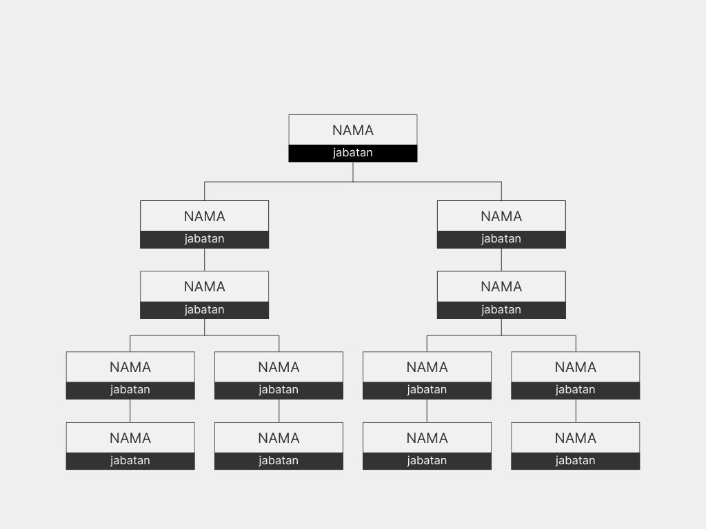
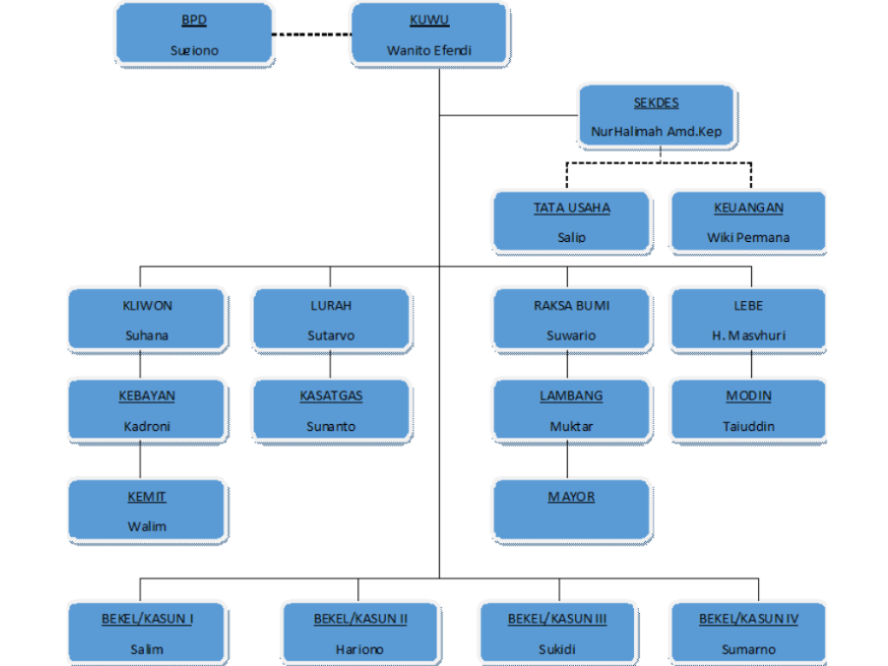

Struktur Organisasi

Anggota Dan Jabatan Kelurahan
×


Kelurahan Huangobotu pertama kali tercatat sebagai bagian dari wilayah Kecamatan Kota Barat di Kota Gorontalo. Pada tahun 2003, seiring pemekaran administrasi, dibentuklah Kecamatan Dungingi dan Huangobotu ditetapkan sebagai salah satu dari lima kelurahannya – bersama Libuo, Tuladenggi, Tomulabutao, dan Tomulabutao Selatan – dengan kode Kemendagri 75.71.04.1001. .Wilayah ini berada di pesisir Sungai Bolango, memegang peranan penting sejak era Sultan Botutihe pada abad ke-17 sebagai pusat pemerintahan dan perdagangan di Jazirah Gorontalo Kecamatan Dungingi. Nama “Huangobotu” sendiri berasal dari bahasa Gorontalo: huango artinya “tempat” atau “lokasi” dan botu berarti “batu”. Secara harfiah, Huangobotu dipahami sebagai “tempat batu” atau “lokasi batu besar”, merujuk pada ciri bentang alam setempat—sejumlah batu cadas di tepi sungai yang dulu dijadikan petunjuk arah bagi pelayar dan masyarakat lokal. Makna ini terutama dipertahankan melalui tradisi lisan warga hingga kini.
| NO. | KEPALA DESA | PERIODE |
|---|---|---|
| 1. | [NAMA ANGGOTA] | 2019 |
| 2. | [NAMA ANGGOTA] | 2020 |
| 3. | [NAMA ANGGOTA] | 2021 |
| 4. | [NAMA ANGGOTA] | 2022 |
| 5. | [NAMA ANGGOTA] | 2023 |
| 6. | [NAMA ANGGOTA] | 2024 |
| 7. | [NAMA ANGGOTA] | 2025 |
| 8. | [NAMA ANGGOTA] | 2026 |
| 9. | [NAMA ANGGOTA] | 2027 |
“DENGAN SEMANGAT PERSAUDARAAN, GOTONG ROYONG DAN AKHLAK MULIA GUNA MEWUJUDKAN DESA LANGKAP YANG LUAR BIASA”.